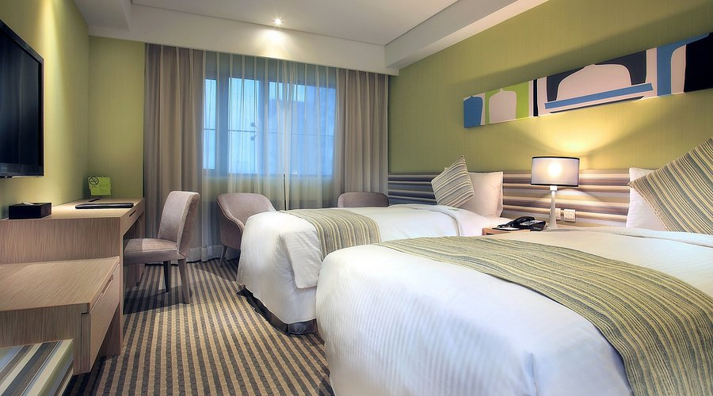

|
Park City Hotel no.66, Minquan Rd., Central dist. (04) 2223-5678 2012 Car Rental Corporation 4.1 bintang  Di dalam Taichung, dapat ditemukan berbagai lokasi terkenal seperti Feng Chia Night Market, Rainbow Village, 921 Earthquake Museum dan seterusnya. Budaya Taichung sangat beragam, mulai dari festival lampion, kuil-kuil, opera dan lain-lainnya. Mata uang yang digunakan di sana ialah Dolar Taiwan Baru (NTD), dengan 1 NTD bernilai Rp500. Dengan langit yang cerah dan suhu sedang hampir sepanjang tahun, Taichung adalah tempat paling nyaman untuk memilih hotel penginapan pada awal ataupun akhir tahun. Park City Taichung adalah sebuah hotel dengan lebih dari 100 kamar. Satu kamar bisa berukuran 20 sampai 40 meter persegi. Di hotel ini, terdapat gym, restoran, kolam renang, hingga playground. Hotel ini memiliki berbagai macam atraksi di dekatnya, seperti Taiwan National Museum of Comics dan juga Taiwan National Museum of Fine Arts bagi yang menyukai seni. Dekat Taichung Park City Hotel, ada juga pasar tradisional, klinik, pusat oleh-oleh, dan stasiun kereta. Ada beberapa pilihan kamar: standard, yang berharga sekitar NT$2.000 per malam, sampai tipe suite mewah seharga NT$6.000 per malam. Pelayanan di hotel ini sangat cepat dan baik. Resepsionis di meja depan bertindak dengan cepat selagi tetap berlaku sopan. Setiap ruangan bersih dan aman, dengan adanya kunci rantai di pintu depan setiap kamar. Kunci tersebut menjamin keamanan siapapun yang sedang menginap pada pagi dan malam hari. Hal yang lumayan mengagetkan adalah adanya bathtub dan juga bidet di toilet semua kamar. Ini adalah hal yang sangat baik, sebab di Taiwan, mayoritas toilet umum tidak memiliki bidet. Sayangnya, hotel ini juga memiliki kekurangannya tersendiri. Pertama, pintu antar-kamar kurang kedap suara. Kebisingan dari kamar sebelah bisa didengar dari kamar sendiri, hingga dapat mengganggu kenyamanan. Lalu, pintu kamar mandi dalam ruangan sulit ditutup dan dengan mudah bisa terbuka dengan sendirinya. Makanan yang disediakan di restoran ini juga tidak terlalu bervariasi dan kurang berkualitas, seperti adanya roti sedikit kering dan tipis di area buffet. Akhir kata, Park City Hotel Taichung merupakan hotel yang sangat enak diinapi, dengan berbagai macam fasilitas, tempat wisata dekat, ruangan luas dan pelayanan yang cepat. Ada beberapa hal yang harus diwaspadai bagi wisatawan yang berencana menginap di sini, seperti masalah kebisingan dan menu terbatas. Bagi yang merasa akan terganggu, sebenarnya, kedua hal itu bisa terselesaikan dengan mudah: membawa earplug dan pergi ke restoran di luar hotel untuk makan pagi. Hotel ini tidaklah sempurna, tetapi dengan harganya yang lumayan terjangkau, Park City Hotel Taichung bisa menjadi sebuah opsi bagi wisatawan yang menginginkan tempat penginapan murah dan akses mudah pada berbagai macam objek wisata. |